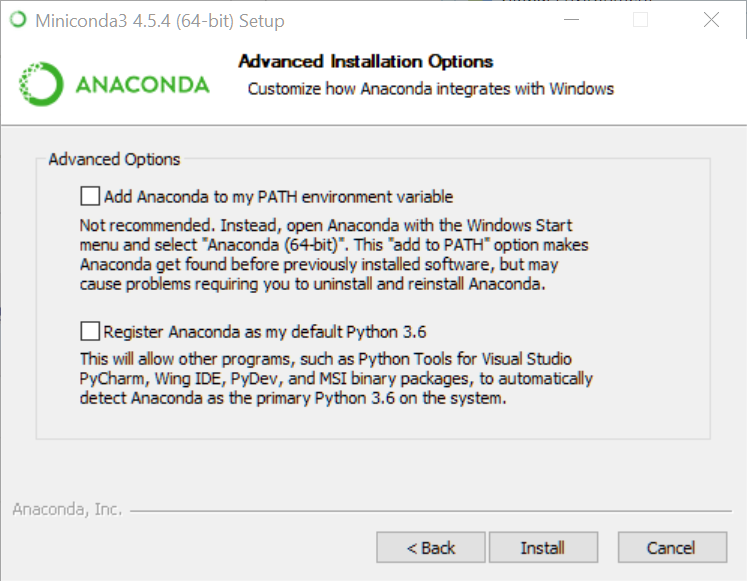

Chapter 2 Miniconda Integration
2.1 Why do this?
A number of R deep learning packages use Python under the hood. RStudio’s keras (Allaire and Chollet 2018) package, for example, works this way. Also, the R docker (Karambelkar 2017) package works by calling a Python Docker API library from R via reticulate (Allaire, Ushey, and Tang 2018). And, of course, you’ll probably end up receiving a Jupyter notebook or two even if you’re a die-hard RStudio user.
Miniconda is a bare-bones minimalist version of the rather large Anaconda environment. If you’re doing Python data science, you probably have the full Anaconda installed already. But for R programmers, we only want enough Python for the R packages that use Python libraries to work. So … here we go!
2.2 Install the installr package.
There’s an R package called installr (Galili 2018) that can download and run a Windows installer.
2.3 Install Miniconda3
The following R code chunk will download and install Miniconda3.
Here are the screenshots you’ll see:
_Setup.png)
Click Next.
_Setup.png)
Click I Agree.
_Setup.png)
Just Me, Next.
_Setup.png)
Choose the install location. The default is your home directory, which on my laptop is a small SSD. So I changed it to the D drive, which is a terabyte spinning disk. After you’ve set the install location, click Next.

Clear both check boxes and click Install.
_Setup.png)
Click Next.
_Setup.png)
Clear the check boxes and click Finish.
2.4 Install reticulate
Did it work?
## python: /usr/bin/python
## libpython: /usr/lib/libpython3.7m.so
## pythonhome: /usr:/usr
## version: 3.7.0 (default, Jul 15 2018, 10:44:58) [GCC 8.1.1 20180531]
## numpy: /usr/lib/python3.7/site-packages/numpy
## numpy_version: 1.15.1
##
## python versions found:
## /home/znmeb/.conda/envs/docker/bin/python
## /usr/bin/python
## /usr/bin/python3References
Allaire, JJ, and François Chollet. 2018. Keras: R Interface to ’Keras’. https://keras.rstudio.com.
Karambelkar, Bhaskar. 2017. Docker: Wraps Docker Python Sdk. https://CRAN.R-project.org/package=docker.
Allaire, JJ, Kevin Ushey, and Yuan Tang. 2018. Reticulate: Interface to ’Python’. https://github.com/rstudio/reticulate.
Galili, Tal. 2018. Installr: Using R to Install Stuff (Such as: R, ’Rtools’, Rstudio, ’Git’, and More!).